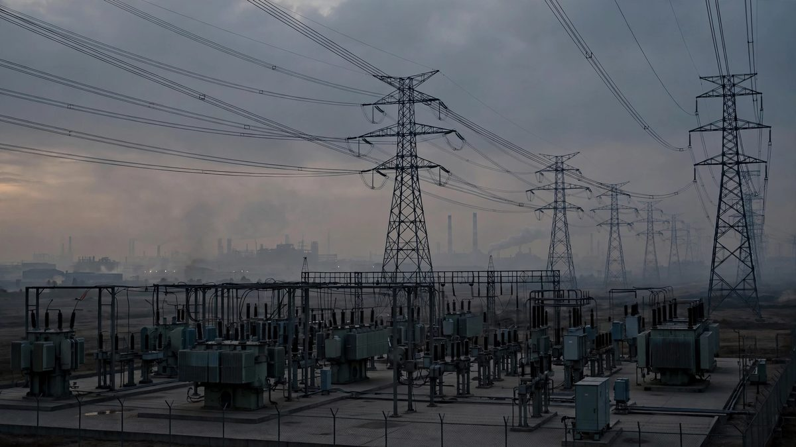

Ukraine Says Russia Broke Trump's Energy Ceasefire Within Hours
Zelensky told the Warsaw Security Forum that Moscow struck a Kharkiv power plant and a gas facility hours after Trump's surprise announcement, while the Kremlin refused to confirm any deal and Washington warned Kyiv over its refinery strikes.

Key points
- President Volodymyr Zelenskiy said on Sunday that Russia has attacked Ukraine's energy, oil and gas sectors 76 times in the week since President Donald Trump announced an energy ceasefire, Reuters…
- The Associated Press reported the same count and added that energy facilities in four Ukrainian regions were attacked in the past night alone, and that tens of thousands of families were still…
- Updated 16:43 UTC, Oct 13: President Volodymyr Zelenskiy said on Tuesday that Ukraine received no warning from its partners before a Russian ballistic missile attack on Kyiv on Monday night.
Updated 10:32 UTC, Oct. 18, 2026
President Volodymyr Zelenskiy said on Sunday that Russia has attacked Ukraine's energy, oil and gas sectors 76 times in the week since President Donald Trump announced an energy ceasefire, Reuters reported. He wrote on X that the latest strikes hit substations in the Vinnytsia, Zhytomyr, Khmelnytskyi and Odesa regions. Neither Kyiv nor Moscow has confirmed Trump's announced ceasefire agreement, Reuters noted.
The Associated Press reported the same count and added that energy facilities in four Ukrainian regions were attacked in the past night alone, and that tens of thousands of families were still without power. Zelenskiy accused Russia of trying to cause a blackout. "America should see that Russia is not taking any reciprocal steps in response to sanctions relief or agreements," he wrote. Ukraine confirmed on Thursday that it had resumed attacks on Russian oil after a three day pause.
Updated 16:43 UTC, Oct 13: President Volodymyr Zelenskiy said on Tuesday that Ukraine received no warning from its partners before a Russian ballistic missile attack on Kyiv on Monday night. Five missiles hit civilian infrastructure in the capital, and air raid alerts sounded only after explosions had already been heard, Reuters reported. Zelenskiy said early warning intelligence on missile launches saves lives. He stopped short of linking the missing warning to reported United States threats to cut intelligence sharing if Ukraine keeps striking Russian refineries.
Zelenskiy also said a residential building in Kharkiv was destroyed overnight. Four people were killed there and 41 people were injured in Kharkiv in one evening, he said. Foreign Minister Andrii Sybiha, speaking at the Warsaw Security Forum, said Ukraine was still receiving United States military intelligence and that the delay was due to the type of weapon Russia used. Reuters reported that Russia hit no Ukrainian energy targets overnight, the first night since President Donald Trump announced an energy ceasefire on Sunday, but struck transport and logistics sites with missiles and drones. Zelenskiy said Ukraine had not struck Russian refineries in the two days since the announcement.
Updated 23:25 UTC: Russia's foreign minister, Sergey Lavrov, rejected the ceasefire outright on Monday. Asked about Trump's announcement, Lavrov dismissed the idea as an attempt by President Volodymyr Zelensky to win a pause to regroup and rearm, and said Zelensky did not deserve a respite. Moscow has still not confirmed that it agreed to anything.
Zelensky gave fuller casualty figures later on Monday. He said Russian drones struck a gas production facility around midnight and hit at least five other energy targets, with 33 people reported wounded across the country. A large strike on the Kharkiv region on Sunday night hit a power plant and killed three people and wounded nine others, including children, he told Fox News. Zelensky said Ukraine supports the idea of an energy ceasefire but sees no sign that Russia is complying, and he called on Washington to press Moscow to follow the terms Trump announced.
KYIV, Ukraine. President Volodymyr Zelensky said on Monday that Russia had already broken the "energy ceasefire" President Donald Trump announced less than a day earlier, telling the Warsaw Security Forum that Russian strikes hit Ukrainian power plants and gas facilities hours after Trump's social media declaration.
Trump said on Sunday that Russia and Ukraine had agreed to an immediate halt to attacks on energy infrastructure. "Effective immediately, there is an ENERGY CEASEFIRE in the War between Russia and Ukraine. Both parties have agreed. Do not break it!" he wrote on social media on Sunday morning.
The announcement caught Kyiv off guard. Zelensky said he learned of it from the news and had not been told in advance. "We support it, but I have not heard approval of this proposal from the Russian side," he said, speaking by video link to the Warsaw gathering. Moscow then stayed silent. Kremlin spokesman Dmitry Peskov told reporters only that "contacts are continuing" and refused to confirm any agreement.
Then Zelensky detailed the violations. Shortly after Trump's announcement, Russia struck a power plant in Kharkiv, he said. "Last night, Russian oil refineries were not burning, but at midnight, a Russian jet-powered Shahed struck a gas production facility in Ukraine," Zelensky said. He added that Ukraine had launched no attacks on Russian refineries overnight and would honor the truce if Russia did. If Moscow refused, he warned, Ukraine would "respond."
Why it matters
The war's energy front has become its most consequential battleground for ordinary people on both sides. Ukrainian strikes on Russian refineries have disrupted fuel supplies inside Russia for weeks. Russian strikes on Ukrainian power plants threaten heating as winter approaches. A real halt would spare civilians in both countries. A fake one leaves Kyiv bound by a promise Moscow never made.
The episode also matters because it unfolded alongside direct American pressure on Ukraine. Over the weekend, US officials warned Kyiv and European allies that Washington could suspend intelligence sharing and European purchases of American weapons for Ukraine if the refinery strikes continue. The Financial Times first reported the warnings; CNN confirmed them with two European officials, who said the messages came from the State Department and the Pentagon, including direct contact from the US military to Ukrainian commanders. One European official called the threat a "sad day" for Ukraine and its allies, describing the intelligence and weapons channels as vital.
The context
On Friday, the US Treasury's Office of Foreign Assets Control issued General Licence No. 135, authorizing certain transactions involving the sale, delivery and import of diesel fuel of Russian origin, an authorization that runs until April 7, 2027. Trump explained the move as a way to increase diesel supply and curb price rises. Zelensky criticized the easing, warning it could give Russia more money for the war. European officials warned the extra energy revenue could sustain Moscow's fighting.
On Saturday, Trump warned Zelensky that he had "better damn well stop" attacking Russian refineries and urged Ukrainians to choose a new president. Elections have been suspended in Ukraine since the 2022 invasion; Zelensky said he would call a vote if Russian President Vladimir Putin agreed to a 60-day ceasefire.
Trump has blamed the refinery strikes for a rise in diesel prices that he says is hurting his party ahead of US midterm elections. Zelensky rejected that claim, saying "everybody in the world" knows the Middle East war is the bigger factor in fuel prices. On Monday, Europe chose a different direction. EU foreign ministers adopted nearly 1,600 new sanctions listings targeting Russia's military-industrial complex, the largest expansion of the EU sanctions list since the war began, according to EU foreign policy chief Kaja Kallas. She said more than half the listings connect to the production chain for ballistic missiles, and she urged Washington to keep pressure on Moscow. Later Monday, Russian Foreign Minister Sergey Lavrov said Zelensky did not deserve a ceasefire. "I do not believe he has earned such a respite, nor do I think we will once again fall for assurances and promises," he said in a video address.
Key numbers
- Nearly 1,600: new EU sanctions listings targeting Russia's military-industrial complex, adopted October 12.
- More than 80: Ukrainian civilians killed by Russian strikes over the past two days, according to EU foreign policy chief Kaja Kallas.
- At least 12: people wounded in Russian attacks on Kharkiv on Monday morning, according to the city's mayor.
- April 7, 2027: expiry date of the US Treasury's General Licence No. 135 easing Russian diesel transactions.
What happens next
Zelensky said the energy ceasefire "can work, and can become a major step toward ending the war" if the United States makes sure Russia respects it. But with Moscow refusing to confirm the agreement and Lavrov dismissing it outright, the deal exists for now only in Trump's social media post. The real question is what Washington does next: whether the threat to cut intelligence sharing and weapons purchases was leverage to force the truce, or a sign that US support for Ukraine is being recast as a transaction over pump prices. Ukraine's winter, and Europe's sanctions machinery, are both moving. The ceasefire, so far, is not.
Timeline
- Oct 9, 2026US Treasury issues General Licence No. 135, authorizing certain transactions in Russian-origin diesel through April 7, 2027. Trump says the move will increase diesel supply and curb price rises.
- Oct 10, 2026Trump warns Zelensky to stop striking Russian refineries and urges Ukrainians to pick a new president. Zelensky says elections have been suspended since the 2022 invasion.
- Oct 11, 2026Trump announces an immediate "energy ceasefire" on social media, saying both sides agreed. The Financial Times reports US threats to cut intelligence sharing and weapons purchases if Ukraine keeps striking Russian energy facilities.
- Oct 12, 2026Zelensky tells the Warsaw Security Forum that Russia violated the ceasefire within hours, striking a Kharkiv power plant and a gas facility with a jet-powered Shahed. The Kremlin says only that "contacts are continuing." The EU adopts nearly 1,600 new sanctions listings on Russia's military-industrial complex.
- Oct 12, 2026Foreign Minister Sergey Lavrov rejects the energy ceasefire and says Zelensky does not deserve a respite. Zelensky says Russian strikes wounded 33 people across Ukraine, and a Kharkiv power plant strike killed three people and wounded nine.
- Oct 13, 2026Zelenskiy says Ukraine received no warning from partners before five ballistic missiles hit civilian infrastructure in Kyiv on Monday night, and says four people were killed and 41 injured in Kharkiv. Sybiha says United States intelligence sharing continues.
- Oct 18, 2026Zelenskiy says Russia has attacked Ukraine's energy, oil and gas sectors 76 times in the week since Trump announced an energy ceasefire, with substations hit in the Vinnytsia, Zhytomyr, Khmelnytskyi and Odesa regions.
Sources
- CNN: Zelensky says Russia has already violated Trump's surprise energy ceasefire
- Reuters: Ukraine accuses Russia of violating Trump's energy ceasefire as EU imposes new sanctions
- CNN: US threatens to suspend intel sharing, weapons purchases if Ukraine continues Russia energy strikes
- The Times: Zelensky: US should back Ukraine like Europe does
- EU Perspectives: Kallas seeks US backing for Russia sanctions
- Ukrainian Media: The EU will not ease sanctions on Russian diesel
- NPR via WAMC: Russia hits Ukraine gas facilities after Trump claims 'energy ceasefire'
- New York Post: Zelensky says Russia still striking energy facilities despite Trump declaration of energy ceasefire
- Reuters via KRRO: Allies failed to warn Ukraine of impending missile attack, Zelenskiy says
- The Times: Zelensky: Allies did not warn of overnight Russian attack
- AnewZ: Zelenskiy statement on overnight strikes and the energy ceasefire
- Reuters: Zelenskiy says Russia attacked Ukrainian energy sector 76 times in past week
- Associated Press via The Reflector: Blaze at St Petersburg oil sites as Kyiv launches more than 1,000 drones at Russia